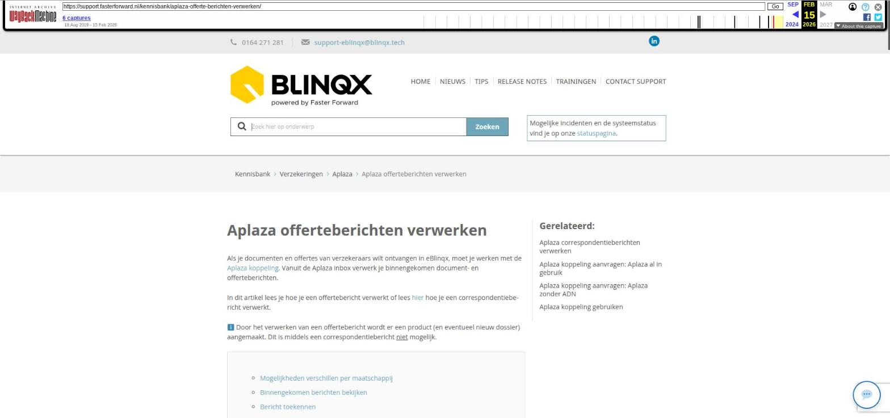

Toevoegen van een persoon/organisatie en wijzigen gegevens

Tekstinhoud
Toevoegen van een persoon/organisatie en wijzigen gegevens
Het kan gebeuren dat je een persoon wilt toevoegen, bijvoorbeeld een partner. Of dat je een organisatie wilt toevoegen aan een dossier. Ofwel een nieuwe relatie. Het kan ook zijn dat je de gegevens wilt wijzigen. Het klantdossier wil je natuurlijk actueel houden.
Persoon toevoegen, wijzigen of verwijderen
Toevoegen
Wijzigen
Verwijderen
Persoon relaties
Persoon relaties terugzien in het dossier
Overlijden
Organisatie en gekoppelde personen opvoeren
Relaties organisaties
Telefoonnummers en e-mailadressen toevoegen of wijzigen
Adressen toevoegen of verwijderen
Bankrekeningnummers
Overige partijen
Header
Persoon toevoegen, wijzigen of verwijderen
Toevoegen
Indien je een persoon wilt toevoegen of wijzigen in een dossier ga je naar het tabblad Partijen & Objecten in het dossier. Klik op het + teken achter het woord 'Personen' om een persoon toe te voegen. Vul vervolgens alle gegevens in en klik op opslaan. De persoon is nu toegevoegd aan het dossier. Bij het aanmaken van een persoon op deze manier kies je de rol. In het dossier kan maar één persoon de eerste persoon of partner zijn. Zijn de andere personen die je wilt toevoegen niet 'partner' of 'kind' dan kan je deze opvoeren als overige partij.
Wijzigen
Mochten er nog wijzigingen of aanvullingen nodig zijn dan kan je deze wijzigen door op de naam van de persoon of het wijzigingsicoon te klikken.
Verwijderen
Wil je een persoon verwijderen uit het dossier dan ga je naar het tabblad Partijen & Objecten. Hier klik je op het rode kruisje achter de persoon. Als de persoon in producten als aanvrager of verzekeringnemer staat geselecteerd dan krijg je eerst een pop-up scherm te zien waarbij je een andere persoon uit het dossier als aanvrager moet selecteren.
Gebeurt er na het klikken op het rode kruisje niets dan kan het zijn dat de persoon in een rechts in de productkaart is geselecteerd al bijvoorbeeld regelmatige bestuurder. De persoon kan pas verwijderd worden als hij nergens meer in een productkaart staat geselecteerd. Mocht het toch niet lukken om de persoon te verwijderen stuur dan een e-mail naar support-eblinqx@blinqx.tech.
Persoon relaties
Onder de persoon – Persoon relatie kan je aangeven of deze persoon een relatie is van een andere persoon in het systeem, bijvoorbeeld een broer of zoon. Dit doe je door op het plusicoon te klikken, er verschijnt dan een pop-up. In het pop-up scherm geef je vervolgens aan hoe de relatie zit. In het dropdownmenu geef je de relatie aan:
Je ziet dat hier nog staat 'Selecteer een persoon'. Deze persoon selecteer je door in het veld 'Achternaam' de juiste persoon erbij te zoeken (of aan te maken als deze nog niet in het systeem aanwezig is). Wanneer je de achternaam hebt ingevuld, druk je op enter. Is de persoon aanwezig dan krijg je in het resultatenblok de persoon te zien.
Hier klik je op om vervolgens onderaan de persoon aan te klikken.
De velden worden dan met deze persoonsgegevens gevuld. 'Selecteer een persoon' wordt dan aangepast naar de naam van de persoon. Vervolgens sla je op.
Wanneer de persoon niet aanwezig is in het systeem dan vul je minimaal handmatig de verplichte velden in en sla je op.
Persoon relaties terugzien in het dossier
Let op: alleen in eBlinqx
In het particuliere dossier op de Startpagina – Algemeen – Klanten zie je bij de personen deze persoonsrelaties terug. Hier zie je 'Relaties met andere dossiers' staan. Vanuit hier kan je doorklikken naar het dossier van de andere persoon relatie, bijvoorbeeld de ouder of kind.
Is de klant gekoppeld aan een organisatie als bijvoorbeeld eigenaar of contactpersoon dan zie je hier ook die link terug. Achter de functienaam zit een bepaalde logica. In het het zakelijke dossier vind je onder 'Relaties met andere dossiers' ook de gekoppelde persoon terug.
Ook zie je deze relaties terug onder het tabblad Financieel – Overzicht. Onderaan het scherm staan daar de relaties met andere dossiers.
Overlijden
Binnen eBlinqx kan je aangeven dat een persoon is overleden. Hiervoor ga je naar het klantdossier – Partijen & Objecten – betreffende persoon – wijzigingsicoon. Hier zet je 'Overleden' op 'Ja' en je vult eventueel de datum van overlijden in.
Na opslaan verschijnt er in de header voor de persoon een kruisje, zodat je in één oogopslag kan zien dat de persoon overleden is. Rapportages en tags (bijvoorbeeld de aanhef) houden rekening met overleden personen.
Organisatie en gekoppelde personen opvoeren
Het is ook mogelijk om een organisatie toe te voegen. Dit doe je via het tabblad Partijen & objecten. Hier staat het kopje 'Organisatie'. Middels het groene plusicoon kan je de organisatie toevoegen. Ook onder de organisatie kan je op onderstaande manieren een telefoonnummer, e-mailadres en dergelijke toevoegen.
Let op: in één dossier voeg je nooit zowel een organisatie als een natuurlijke persoon op. Hier lees je hoe je een persoon kunt koppelen aan de organisatie en hoe je om kan gaan met een particuliere klant die daarnaast ook een zakelijke klant is.
Relaties organisaties
Onder de organisatie kan via 'Relaties organisaties' de relaties (bijvoorbeeld dochter of zuster) met andere organisaties in eBlinqx gelegd worden. Op de startpagina van het dossier kan je deze 'Relaties organisaties' terugvinden onder 'Klanten – Relaties met andere dossiers'. Let op: op dit moment is dit alleen zichtbaar in het dossier waarin de organisatie staat waaronder de relaties organisaties staan ingevuld. Je ziet het dan niet automatisch in het dossier van de organisatie die als relatie organisatie staat opgevoerd mits onder deze organisatie ook de relatie organisatie is opgevoerd.
Telefoonnummers en e-mailadressen toevoegen of wijzigen
Onder de kopjes 'Telefoonnummers' en 'E-mailadressen' kan je telefoonnummers en e-mailadressen toevoegen via het groene plusicoon. Middels het wijzigingsicoon kan je deze aanpassen. Via het rode kruisje kan je deze verwijderen. Ook kan je het type meegeven.
Adressen toevoegen of verwijderen
Onder het kopje 'Adressen' kan je adressen toevoegen of verwijderen. Wijzigen is in de meeste gevallen niet mogelijk. Bij het opvoeren van de gegevens wordt (meestal) gebruik gemaakt van het resultatenblok. Dit houdt in dat er 'onder water' een connectie wordt gelegd op alle plekken waar het adres wordt ingevuld. Wijzig je het adres op één plek dan wijzigt het adres ook op andere plekken. Hierdoor kan het adres op ongewenste plekken gewijzigd worden.
Mocht je het adres willen wijzigen dan kan je het nieuwe adres toevoegen via het plusicoon. Bij het toevoegen kan je aangeven of je in het dossier het standaard correspondentieadres wilt wijzigen. Hier lees je daar meer over. Het oude adres kan je, indien gewenst, verwijderen door middel van het rode kruisje. Je kunt pas een adres verwijderen als deze niet meer in een product of als standaard correspondentieadres geselecteerd staat. Ook kan je het adres niet verwijderen als deze als primair adres onder een persoon staat. Je ziet er dan een groen bolletje bij staan. Een andere manier op het adres te wijzigen is door een verhuizing op te voeren.
Bankrekeningnummers
Onder het kopje 'Bankrekeningnummers' kan je bankrekeningnummers en mandaten toevoegen, wijzigen en verwijderen. Hier lees je er meer over.
Overige partijen
Het kan zijn dat het niet een kind of een partner is die je wilt toevoegen aan het dossier, maar bijvoorbeeld een bewindvoerder of ex-partner. Deze kan je opvoeren als overige partij. Hier lees je er meer over.
Header
De eerste persoon en partner worden getoond in de header. Wanneer je de partner toevoegt, kan het zijn dat deze niet meteen in de header wordt getoond. Je zal dan even de pagina moeten verversen. De gegevens die in de header worden getoond, worden opgehaald door middel van tags. Hier lees je er meer over.
Laatste update: 16 maart 2026
Was deze informatie nuttig?
Ja Nee